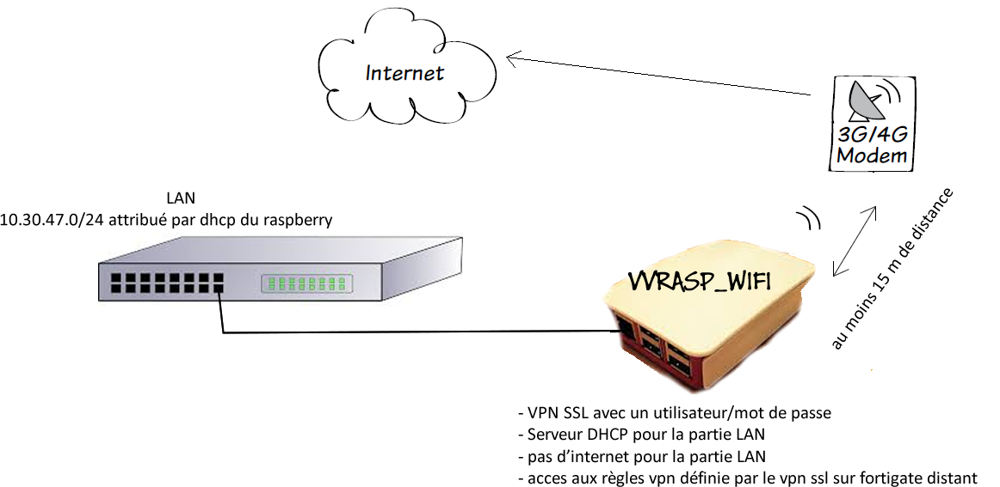

<ion-header>
  <ion-navbar>
    <button ion-button menuToggle>
      <ion-icon name="menu"></ion-icon>
    </button>
    <ion-title>VVRASP_WIFI</ion-title>
  </ion-navbar>
</ion-header>

<ion-content padding>
  <h3>Votre routeur wifi/3G/4G</h3>

  <p>
    Bienvenue sur votre routeur wifi<br>
    Innovation technique crée par Hervé de CHAVIGNY.
  </p>

  <ion-card>
     
  </ion-card>

  <!--<button ion-button secondary menuToggle>Toggle Menu</button>-->
</ion-content>
